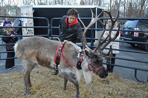

Zoom With the Reindeer
Too far away, but still want some of that reindeer cheer? Use the calendar below to book a short Zoom meeting with the reindeer!
Hire the Reindeer for Your Event
 Little Buddy leading the way!
Little Buddy leading the way!
- Businesses
- Winter Festivals
- Christmas tree farms
- Tree lighting ceremonies
- Private photography sessions (with your photographer)
- Parades
- Two hours: $2000
- Three hours: $2500
- Four hours: $3000
Sleigh rental with reindeer: add $500 to above cost (just for photos: the reindeer will not be hitched to it)
Photo shoot on-site at Shortsville Reindeer Farm: $200 per hour (one hour minimum)
Rates for events outside a 30 mile radius will be determined on a case by case basis.
Contact us to hire reindeer for your event!
 Engagement photo shoot at the farm
Engagement photo shoot at the farm

Moose showing off in public
 Our sleigh
Our sleigh